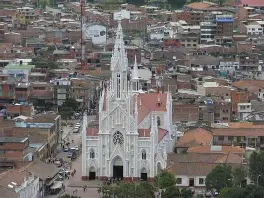
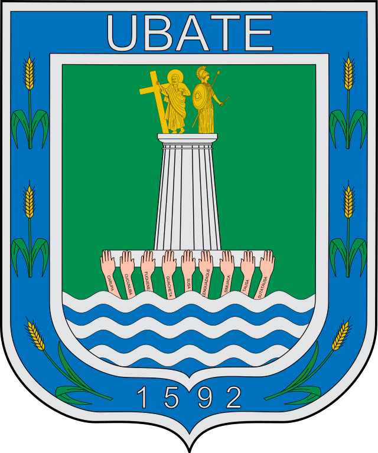

Ubaté, oficialmente Villa de San Diego de Ubaté, es un municipio colombiano del departamento de Cundinamarca ubicado en la Provincia de Ubaté, de la que es capital. Se encuentra en el centro del valle de Ubaté, a 95 km al nororiente de Bogotá, a 50 km de Chiquinquirá, a 45 km de Zipaquirá, 315 km de Bucaramanga y 95 km de Muzo. Ubaté es conocido como la Capital Lechera de Colombia.Tiene una población de 42 558 habitantes según el censo de 2018.

Rico valle de verdes llanuras fértil tierra que Dios nos brindó viviremos los años de gloria siempre en paz con amor y humildad.
Madre tierra de grandes figuras que en su seno las viste crecer hoy son seres que escalan la gloria y a su pueblo lo ven florecer
Los labriegos se ganan la vida desde el alba hasta el atardecer regresando a su dulce morada como premio a su duro quehacer.
templo reliquia sagrada admirado por la humanidad allí guarda un tesoro divino santo Cristo patrón de bondad.
Autor: Adonai Paiva Rodríguez.


Yeison Felipe Rodriguez Castro
Stevan Andres Ladino Buitrago